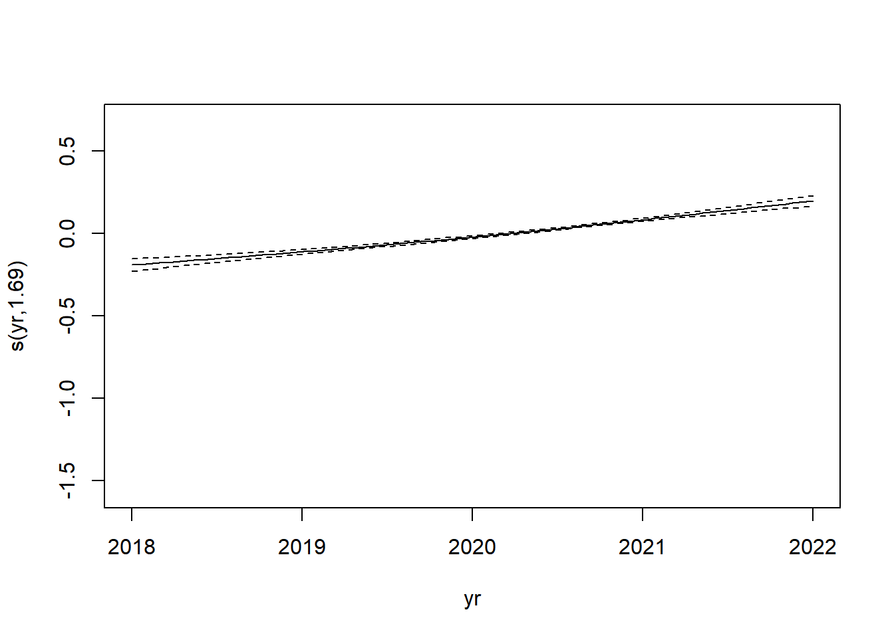
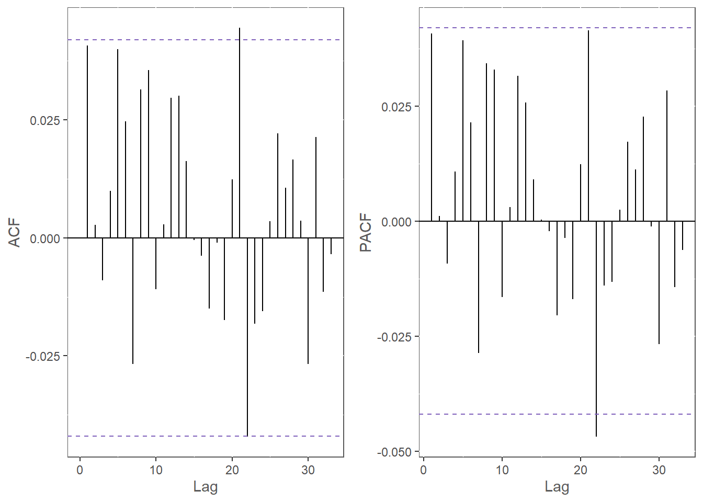

Chapter 4 Valuation of Care Interventions
4.2 Data
4.2.1 Processed Dataset
Data preparation is an even more important step than usual in workflows like this. Unfortunately, it involves a lot of protected health information, so we have to start with the processed, anonymized dataset.
dat <- fread(file = file.path('data', 'intv_data.csv'))
fctrs <- c('gdr', 'prdct', 'cdhp', 'funding', 'state', 'covid',
'intv')
for(fctr in fctrs) dat[, (fctr) := factor(get(fctr))]
dat[]## yr mth scrpts gdr prdct cdhp funding state covid rs intv dur
## 1: 2020 9 1 1 1 1 1 2 FALSE 6.9058 FALSE -17
## 2: 2020 10 1 1 1 1 1 2 FALSE 6.9058 FALSE -16
## 3: 2020 11 0 1 1 1 1 2 FALSE 6.9058 FALSE -15
## 4: 2020 12 0 1 1 1 1 2 FALSE 6.9058 FALSE -14
## 5: 2021 1 0 1 1 1 1 2 FALSE 6.9058 FALSE -13
## ---
## 45488: 2022 3 12 2 1 1 1 2 FALSE 2.6091 FALSE 0
## 45489: 2021 12 3 1 1 2 1 2 FALSE 5.0894 FALSE -2
## 45490: 2022 1 3 1 1 2 1 2 FALSE 5.0894 FALSE -1
## 45491: 2022 2 5 1 1 2 1 2 FALSE 5.0894 FALSE 0
## 45492: 2022 3 2 1 1 2 1 2 FALSE 5.0894 TRUE 1This dataset is a combination of items from many sources, representing a significant analytic challenge. Here is a data dictionary summarizing the elements of this final table, along with some info about how it was processed into this final state.
yr- Year
mth- Month
scrpts- Number of scripts filled by the member that month. Taken from claims data.
gdr- Member’s gender code. Taken from membership data.
prdct- Product code, like PPO, HMO, etc. Taken from membership data.
cdhp- Indicator for whether or not the product is a high-deductible health plan. Taken from membership data.
funding- Funding type for the product, fully-insured or advisory services only. Taken from membership data.
state- Indicator for the state the member resides in. Taken from membership data.
covid- Indicator for whether or not the current month is 202003. Remember, the main COVID impact to the Rx line of business is a spike in utilization at the beginning of the pandemic as companies allowed members to stockpile medications.
rs- Risk score for the individual. These are the output of a proprietary Optum model meant to track the costliness of a member. Note that these are only calculated quarterly, so the last known value is carried forward.
intv- Indicator for whether or not the intervention has taken place. Calculated by joining data from operations tracking files to claims and membership data.
dur- The number of months since the intervention has occurred.
To summarize, then, we have four data sources that needed to be processed.
- Claims - As a mature insurer, UHC has a strictly-structured claims database that serves as the source of truth for all clinical and financial operations around the company. Individuals are assigned a unique ID to facilitate joins.
- Membership - The same goes for membership and eligibility data at UHC.
- Risk Scores - These are maintained separately from claims and membership under the Symmetry product organization.
Unfortunately, this data source uses a different unique ID than the claims and membership data source.
- Operations tracking files - a series of Excel workbooks maintained by the team actually administering the care intervention. These files are, of course, ignorant of the claims, membership, and risk score unique IDs, and are instead organized by member name.
The bulk of the initial work, therefore, was mapping member names to data source unique IDs.
4.2.2 Exposure
Let’s take a look at what the time series of scripts looks like.
pdat <- dat[
,
.(scrpts = sum(scrpts)),
keyby = .(yrmo = paste0(yr, ifelse(mth < 10, 0, ''), mth))
]
ggplot(pdat) +
geom_line(aes(factor(yrmo), scrpts, group = 1)) +
scale_y_continuous(labels = comma) +
labs(x = element_blank(), y = element_blank()) +
mytheme +
theme_rotx
exposure <- dat[
,
.N,
keyby = .(dur)
]
ggplot(exposure) +
geom_line(aes(dur, N)) +
scale_y_continuous(labels = comma) +
labs(x = 'Observations', y = 'Months Since Intervention') +
mytheme
4.3 Model Fitting
For this model, I made use of the random effects spline basis.
If you scroll almost all the way down to the bottom of the output of ?smooth.terms, you will find out that there is a way of constructing a smooth term that yields the equivalent of a random effects term from mixed models.
A random effects model treats the estimated coefficients as realizations of a random variable.
This is preferable in many circumstances, one of which being those we have here, where we have a small sample of a much larger population.
It’s not just unlikely that the mean pharmacy quantity consumed by this population is anything like the true mean of the entire UHC book of business, much less the US as a whole: we know this beforehand because we are taking a sample of some of the most expensive members that UHC covers.
Being able to use a model form that takes into account the bias in our sample will improve the ability of the model to generate useful, generalizable insights.
The code to fit it is found in the following chunk.
cl <- makePSOCKcluster(detectCores())
m <- bam(
scrpts ~ s(yr, k = 3)
+ s(mth, k = 4)
+ covid
+ s(rs, bs = 'cs')
+ s(gdr, bs = 're')
+ s(prdct, bs = 're')
+ s(state, bs = 're')
+ s(cdhp, bs = 're')
+ s(funding, bs = 're')
+ intv,
family = nb(),
data = dat[
exposure[N > 99, ],
on = 'dur'
],
cluster = cl
)
stopCluster(cl)
saveRDS(m, file = file.path('data', 'm_intv.RDS'))Again, I have cached the fitted model in our Github repo for ease of use.
m <- readRDS(file = file.path('data', 'm_intv.RDS'))
summary(m)##
## Family: Negative Binomial(1.928)
## Link function: log
##
## Formula:
## scrpts ~ s(yr, k = 3) + s(mth, k = 4) + covid + s(rs, bs = "cs") +
## s(gdr, bs = "re") + s(prdct, bs = "re") + s(state, bs = "re") +
## s(cdhp, bs = "re") + s(funding, bs = "re") + intv
##
## Parametric coefficients:
## Estimate Std. Error t value Pr(>|t|)
## (Intercept) 0.84074 0.10203 8.240 < 2e-16 ***
## covidTRUE 0.16487 0.02937 5.614 1.99e-08 ***
## intvTRUE -0.05447 0.01383 -3.937 8.25e-05 ***
## ---
## Signif. codes: 0 '***' 0.001 '**' 0.01 '*' 0.05 '.' 0.1 ' ' 1
##
## Approximate significance of smooth terms:
## edf Ref.df F p-value
## s(yr) 1.6936 1.905 122.93 < 2e-16 ***
## s(mth) 2.6623 2.913 33.30 < 2e-16 ***
## s(rs) 8.7355 9.000 1860.94 < 2e-16 ***
## s(gdr) 0.9861 1.000 99.85 < 2e-16 ***
## s(prdct) 2.8744 3.000 364.05 < 2e-16 ***
## s(state) 2.9337 3.000 308.15 < 2e-16 ***
## s(cdhp) 0.9933 1.000 948.65 < 2e-16 ***
## s(funding) 0.9476 1.000 454.82 1.25e-05 ***
## ---
## Signif. codes: 0 '***' 0.001 '**' 0.01 '*' 0.05 '.' 0.1 ' ' 1
##
## R-sq.(adj) = 0.203 Deviance explained = 20.5%
## fREML = 64839 Scale est. = 1 n = 45236An \(R^2\) of ~20% is actually quite good for monthly, individual-level claims data. Like I said earlier, healthcare claims are just one of those subject areas that exhibit very high variance.
plot(m, select = 1)plot(m, select = 2)
plot(m, select = 3)